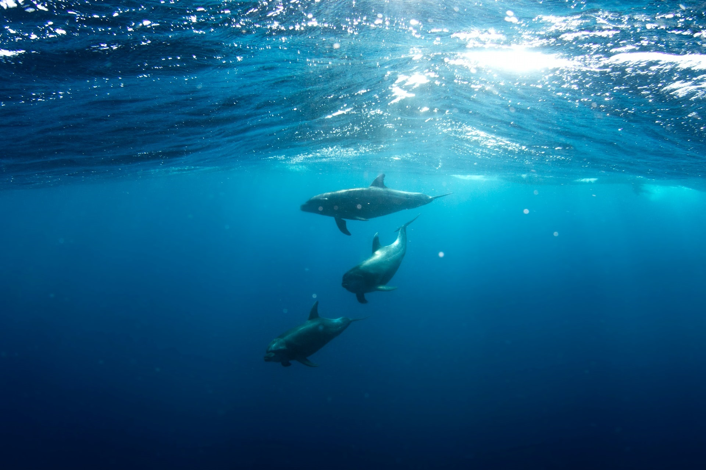
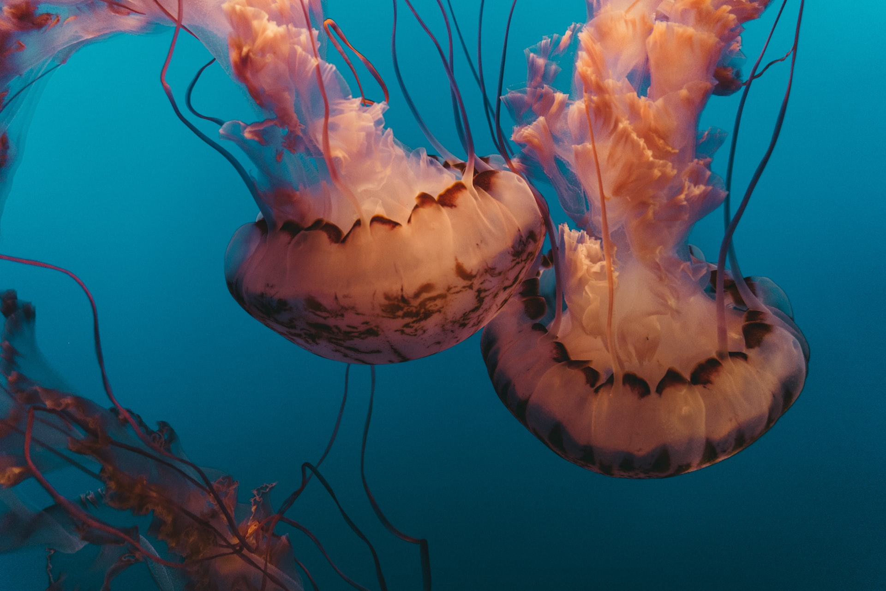
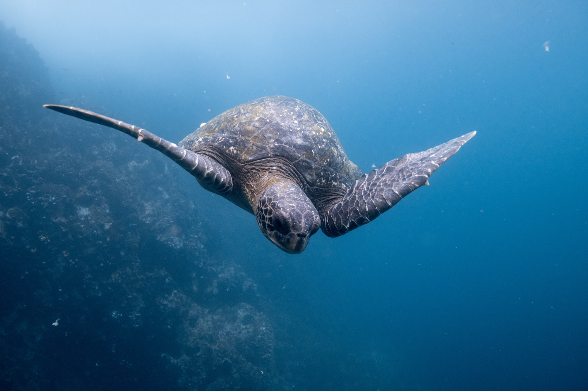

Global warming, marine pollution and overfishing are among the major factors
that treaten the biodiversity of the oceans and coastal ecosystems [Reference 1].
The United Nations (UN) sustainable development goal number 14 targets conservation and sustainably use of the
oceans, sea and marine resources. Read more on the global challenge


Our Solution
Explore the Ocean Wildlife -LiveMarine- is a unique project that lets you explore marine wildlife through live streaming
on subscription basis.
LiveMarine is an established tool of the Global Ocean Observing System` s (GOOS) scientific observation
and research program aiming to explore and understand the biodiversity under water. Read more on our solution
Impact of LiveMarine on Ocean Life
Conservation of biodiversity and ecosystems in oceans and seas is closely related to our well-being and development.
According to UNESCO, bacteria found in the ocean can be an ally against COVID-19 i terms of rapid testing of the virus
[Reference 7]. Morever, discovery of many pharmaceutials rely on the biodiversity in the
oceans although most of ocean species are still undiscovered [Reference 8].
LiveMarine project does not only serve for discovery of species under water and observation of fish stocks in the ocean but it is also an
educational tool aiming to increase the awareness and knowlegde about biodiversity, wildlife and ecological systems below water. The underwater
cameras bring the reality and challenges oceans are facing into your home and let us share our knowlegde with you. The subscription fee goes back
into our work for spreading the message about how important marine life is and why we should protect it.

Subscribe
We at LiveMarine started this project to raise awareness -
both of the beauty of the sea, and the problems and challenges that lie within it.
Hopefully you also share our interest in improving the quality of life underwater.
Subscribing will give you access to a live feed to gaze at the beauty of nature and wildlife below water.
You can read more about this on our solution.
Beneath is a brief preview of some of what you could get if you subscribed.
Just imagine, hours of beautiful live video footage of this, while simultaneously
helping the ocean!